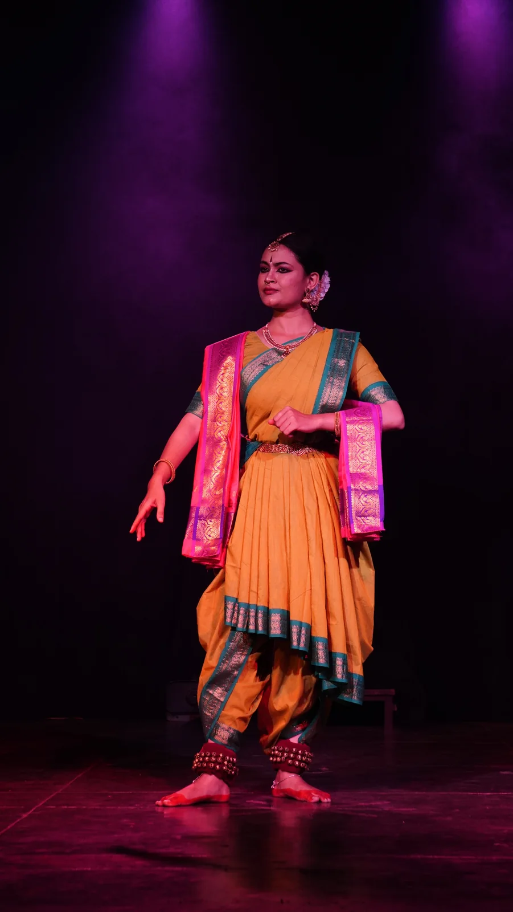
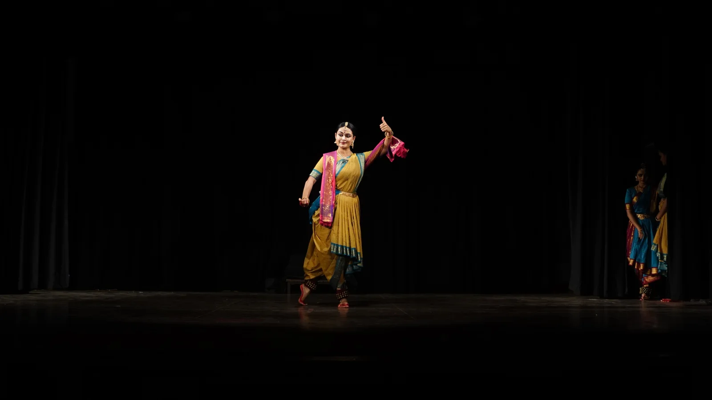
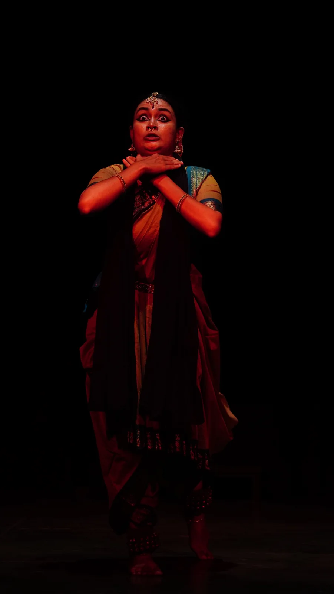
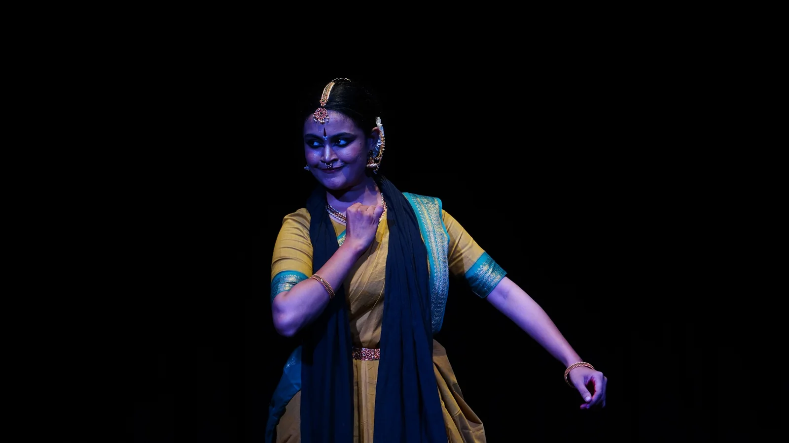
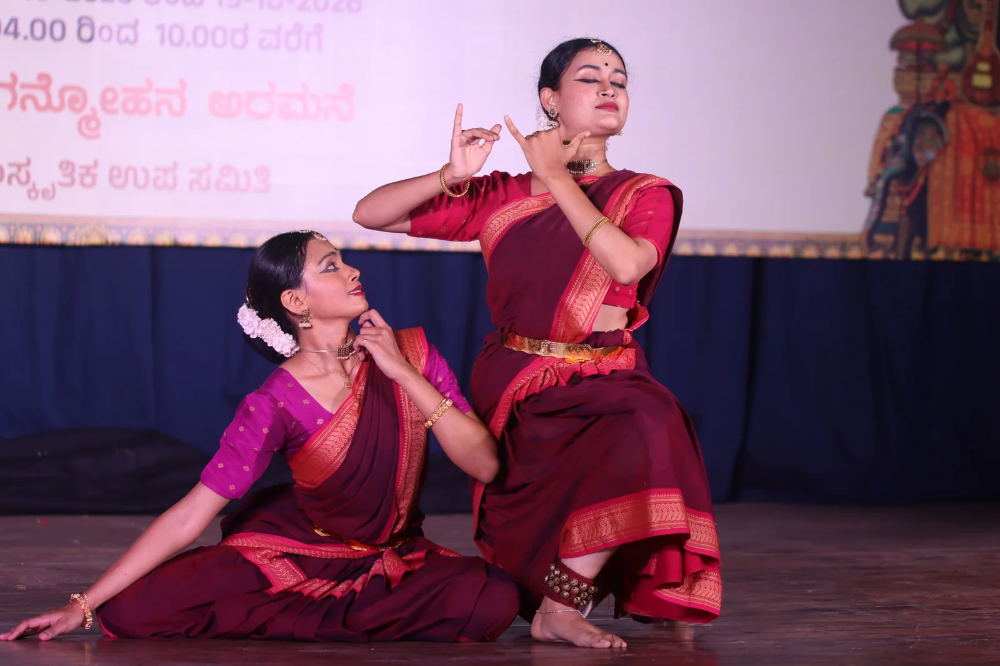
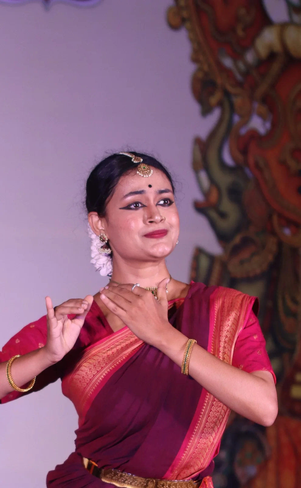
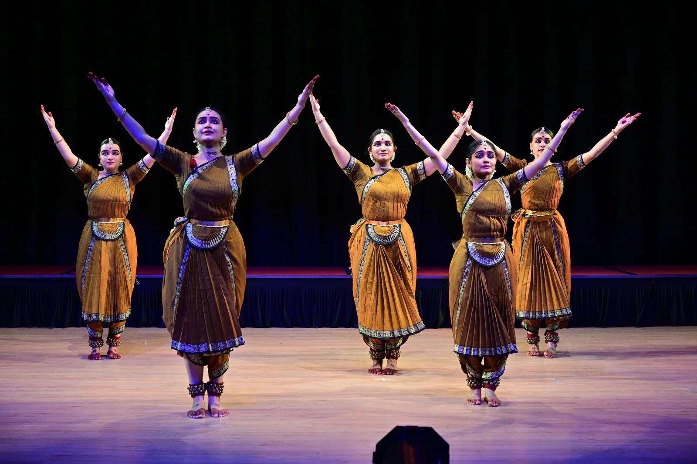
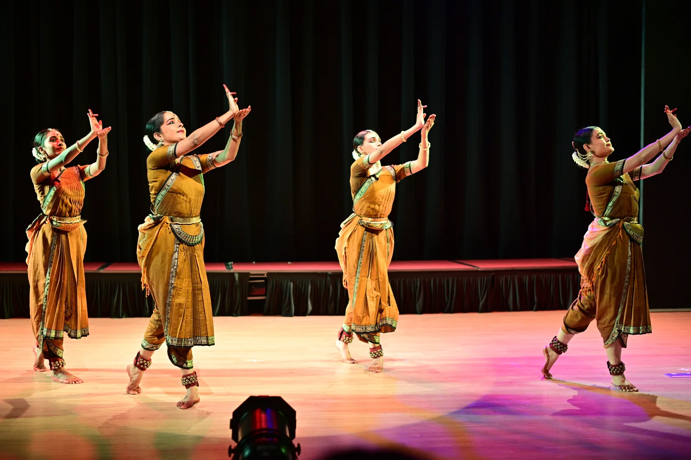

Chintana Ramayana
An epic
embodied.
Featured performer and choreographer.
Nadabrahma Sangeetha Sabha, Mysuru.
Enquire about performances
 BHARATANATYAM
BHARATANATYAM05 / Productions
Choreography, performance and ensemble music.
Chintana Ramayana
Featured performer and choreographer.
Nadabrahma Sangeetha Sabha, Mysuru.
Enquire about performances





Vishwakutumbi
Choreographed and performed by Krithi Kailar, based on the kavanas of Pu. Ti. Narasimhachar.
A meeting of poetic thought, expressive movement and the language of Bharatanatyam.


An ensemble music presentation on the Mysore Palace stage.
Kṣetra Darśana through Saṅgīta. A seven-member thematic musical presentation under the guidance of her saṅgīta Guru.